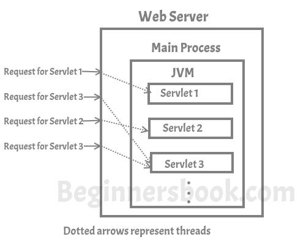

Servlet is a java program that runs inside JVM on the web server. It is used for developing dynamic web applications.
Before we proceed further lets understand what is dynamic web application? A web application can be described as collection of web pages (e.g. a website) and when we call it dynamic, it simply means that the web pages are not same for all the users, web pages would be generated on server side based on the request made by client(user’s browser).
The main difference between static and dynamic web page is that static page as name suggests remains same for all users however a dynamic web page changes based on the request from client (user’s browser). For example, consider a web application that shows you two input fields & an add button and when you enter two numbers and click add, it shows you another web page that has the result of addition of two numbers, this web application is dynamic in nature as the second web page that shows you the result changes based on the user input, it is not static for all users.
However you can very well say that what a servlet does can be done by CGI (Common Gateway Interface), well its true but here is the thing – CGI has several limitations such as performance, scalability, reusability etc. that a servlet doesn’t have. I am not going to discuss CGI in detail but I am going to tell you, how a servlet is better than CGI.
Limitations of CGI
Server has to create a new CGI process for every client request. For example, If 100 users are accessing the web application, then the server has to create 100 CGI processes to handle the request made by them. Since a server has limited resources, creating new process every time for a new request is not a viable option, this imposed the limitation on server, due to that the server cannot handle more than a specified number of users at the same time.
How Servlet is better than CGI
CGI programs are handled by a new process every time a new request has been made. Unlike CGI, the servlet programs are handled by separate threads that can run concurrently more efficiently.
CGI program can be written in any programming language that makes it mostly platform dependent as not all programming languages are platform independent. Servlet only uses Java as programming language that makes it platform independent and portable. Another benefit of using java is that the servlet can take advantage of the object oriented programming features of java.
How Servlet Works
As I mentioned above that concurrent requests to the server are handled by threads, here is the graphical representation of the same –

Features of Servlet
Now that we have understood what is a servlet and for what purpose it is being used. Let’s proceed further and discuss its main features.
1. Portable:
As I mentioned above that Servlet uses Java as a programming language, Since java is platform independent, the same holds true for servlets. For example, you can create a servlet on Windows operating system that users GlassFish as web server and later run it on any other operating system like Unix, Linux with Apache tomcat web server, this feature makes servlet portable and this is the main advantage servlet has over CGI.
2. Efficient and scalable:
Once a servlet is deployed and loaded on a web server, it can instantly start fulfilling request of clients. The web server invokes servlet using a lightweight thread so multiple client requests can be fulling by servlet at the same time using the multithreading feature of Java. Compared to CGI where the server has to initiate a new process for every client request, the servlet is truly efficient and scalable.
3. Robust:
By inheriting the top features of Java (such as Garbage collection, Exception handling, Java Security Manager etc.) the servlet is less prone to memory management issues and memory leaks. This makes development of web application in servlets secure and less error prone.
Leave a Reply